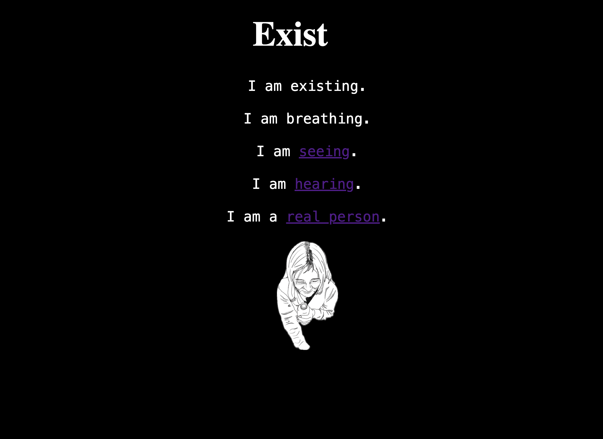

Net-Art
Existence
Existence has always been something I think about a lot. It has become an unhealthy obsession at times that has caused me to panic from overthinking life and afterlife, and reality. I have overtime been able to work through this, however at times it still affects me, and I found that the most helpful thing for me was creating artwork to express this feeling, as it is difficult to do so through words sometimes. I hope to connect with others through more projects such as this one. It is a look into a part of my mind and my personality.
Visit Net-Art website here!